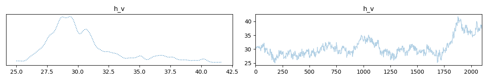
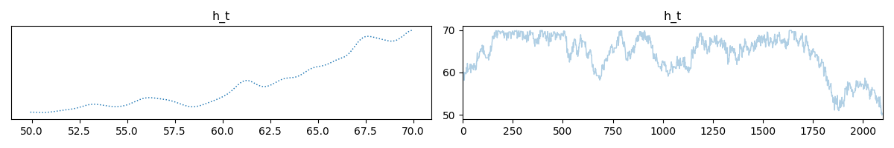
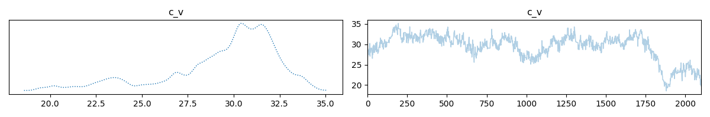
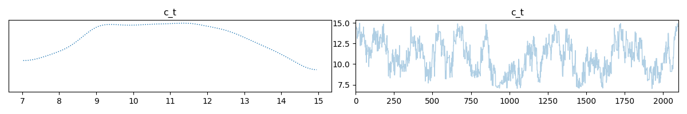

Note
Go to the end to download the full example code.
Multiple input model: bathtub demo#
This is a demo for bathtub water temperature and volume model using CUQIpy. We have measurements of the temperature and volume of the water in the bathtub and want to infer the temperature and volume of the hot water and the cold water that were used to fill in the bathtub
Import libraries#
import cuqi
import numpy as np
Define the forward map#
h_v is the volume of hot water, h_t is the temperature of hot water, c_v is the volume of cold water, and c_t is the temperature of cold water.
def forward_map(h_v, h_t, c_v, c_t):
# volume
volume = h_v + c_v
# temperature
temp = (h_v * h_t + c_v * c_t) / (h_v + c_v)
return np.array([volume, temp]).reshape(2,)
Define gradient functions with respect to the unknown parameters#
# Define the gradient with respect to h_v
def gradient_h_v(direction, h_v, h_t, c_v, c_t):
return (
direction[0]
+ (h_t / (h_v + c_v) - (h_v * h_t + c_v * c_t) / (h_v + c_v) ** 2)
* direction[1]
)
# Define the gradient with respect to h_t
def gradient_h_t(direction, h_v, h_t, c_v, c_t):
return (h_v / (h_v + c_v)) * direction[1]
# Define the gradient with respect to c_v
def gradient_c_v(direction, h_v, h_t, c_v, c_t):
return (
direction[0]
+ (c_t / (h_v + c_v) - (h_v * h_t + c_v * c_t) / (h_v + c_v) ** 2)
* direction[1]
)
# Define the gradient with respect to c_t
def gradient_c_t(direction, h_v, h_t, c_v, c_t):
return (c_v / (h_v + c_v)) * direction[1]
Define domain geometry and range geometry#
domain_geometry = (
cuqi.geometry.Discrete(['h_v']),
cuqi.geometry.Discrete(['h_t']),
cuqi.geometry.Discrete(['c_v']),
cuqi.geometry.Discrete(['c_t'])
)
range_geometry = cuqi.geometry.Discrete(['temperature','volume'])
Define the forward model object#
model = cuqi.model.Model(
forward=forward_map,
gradient=(gradient_h_v, gradient_h_t, gradient_c_v, gradient_c_t),
domain_geometry=domain_geometry,
range_geometry=range_geometry
)
Experiment with partial evaluation of the model#
print("\nmodel()\n", model())
print("\nmodel(h_v = 50)\n", model(h_v=50))
print("\nmodel(h_v = 50, h_t = 60)\n", model(h_v=50, h_t=60))
print("\nmodel(h_v = 50, h_t = 60, c_v = 30)\n", model(h_v=50, h_t=60, c_v=30))
print(
"\nmodel(h_v = 50, h_t = 60, c_v = 30, c_t = 10)\n",
model(h_v=50, h_t=60, c_v=30, c_t=10),
)
model()
CUQI Model: _ProductGeometry(
Discrete[1]
Discrete[1]
Discrete[1]
Discrete[1]
) -> Discrete[2].
Forward parameters: ['h_v', 'h_t', 'c_v', 'c_t'].
model(h_v = 50)
CUQI Model: _ProductGeometry(
Discrete[1]
Discrete[1]
Discrete[1]
) -> Discrete[2].
Forward parameters: ['h_t', 'c_v', 'c_t'].
model(h_v = 50, h_t = 60)
CUQI Model: _ProductGeometry(
Discrete[1]
Discrete[1]
) -> Discrete[2].
Forward parameters: ['c_v', 'c_t'].
model(h_v = 50, h_t = 60, c_v = 30)
CUQI Model: Discrete[1] -> Discrete[2].
Forward parameters: ['c_t'].
model(h_v = 50, h_t = 60, c_v = 30, c_t = 10)
[80. 41.25]
Define prior distributions for the unknown parameters#
h_v_dist = cuqi.distribution.Uniform(0, 60, geometry=domain_geometry[0])
h_t_dist = cuqi.distribution.Uniform(40, 70, geometry=domain_geometry[1])
c_v_dist = cuqi.distribution.Uniform(0, 60, geometry=domain_geometry[2])
c_t_dist = cuqi.distribution.TruncatedNormal(
10, 2**2, 7, 15, geometry=domain_geometry[3]
)
Define a data distribution#
data_dist = cuqi.distribution.Gaussian(
mean=model(h_v_dist, h_t_dist, c_v_dist, c_t_dist),
cov=np.array([[1**2, 0], [0, 0.5**2]])
)
Define a joint distribution of prior and data distributions#
joint_dist = cuqi.distribution.JointDistribution(
data_dist,
h_v_dist,
h_t_dist,
c_v_dist,
c_t_dist
)
Define the posterior distribution by setting the observed data#
# Assume measured volume is 60 gallons and measured temperature is 38 degrees
# celsius
posterior = joint_dist(data_dist=np.array([60, 38]))
Experiment with conditioning the posterior distribution#
print("posterior", posterior)
print("\nposterior(h_v_dist = 50)\n", posterior(h_v_dist=50))
print("\nposterior(h_v_dist = 50, h_t_dist = 60)\n", posterior(h_v_dist=50, h_t_dist=60))
print(
"\nposterior(h_v_dist = 50, h_t_dist = 60, c_v_dist = 30)\n",
posterior(h_v_dist=50, h_t_dist=60, c_v_dist=30),
)
posterior JointDistribution(
Equation:
p(h_v_dist,h_t_dist,c_v_dist,c_t_dist|data_dist) ∝ L(c_v_dist,h_v_dist,h_t_dist,c_t_dist|data_dist)p(h_v_dist)p(h_t_dist)p(c_v_dist)p(c_t_dist)
Densities:
data_dist ~ CUQI Gaussian Likelihood function. Parameters ['h_v_dist', 'h_t_dist', 'c_v_dist', 'c_t_dist'].
h_v_dist ~ CUQI Uniform.
h_t_dist ~ CUQI Uniform.
c_v_dist ~ CUQI Uniform.
c_t_dist ~ CUQI TruncatedNormal.
)
posterior(h_v_dist = 50)
JointDistribution(
Equation:
p(h_t_dist,c_v_dist,c_t_dist|data_dist,h_v_dist) ∝ L(c_v_dist,h_t_dist,c_t_dist|data_dist)p(h_t_dist)p(c_v_dist)p(c_t_dist)
Densities:
data_dist ~ CUQI Gaussian Likelihood function. Parameters ['h_t_dist', 'c_v_dist', 'c_t_dist'].
h_v_dist ~ EvaluatedDensity(-4.0943445622221)
h_t_dist ~ CUQI Uniform.
c_v_dist ~ CUQI Uniform.
c_t_dist ~ CUQI TruncatedNormal.
)
posterior(h_v_dist = 50, h_t_dist = 60)
JointDistribution(
Equation:
p(c_v_dist,c_t_dist|data_dist,h_v_dist,h_t_dist) ∝ L(c_v_dist,c_t_dist|data_dist)p(c_v_dist)p(c_t_dist)
Densities:
data_dist ~ CUQI Gaussian Likelihood function. Parameters ['c_v_dist', 'c_t_dist'].
h_v_dist ~ EvaluatedDensity(-4.0943445622221)
h_t_dist ~ EvaluatedDensity(-3.4011973816621555)
c_v_dist ~ CUQI Uniform.
c_t_dist ~ CUQI TruncatedNormal.
)
posterior(h_v_dist = 50, h_t_dist = 60, c_v_dist = 30)
Posterior(
Equation:
p(c_t_dist|data_dist) ∝ L(c_t_dist|data_dist)p(c_t_dist)
Densities:
data_dist ~ CUQI Gaussian Likelihood function. Parameters ['c_t_dist'].
c_t_dist ~ CUQI TruncatedNormal.
)
Sample from the joint (posterior) distribution#
First define sampling strategy for Gibbs sampling
sampling_strategy = {
"h_v_dist": cuqi.sampler.MH(
scale=0.2, initial_point=np.array([30])),
"h_t_dist": cuqi.sampler.MALA(
scale=0.6, initial_point=np.array([50])),
"c_v_dist": cuqi.sampler.MALA(
scale=0.6, initial_point=np.array([30])),
"c_t_dist": cuqi.sampler.MALA(
scale=0.6, initial_point=np.array([10])),
}
Then create the sampler and sample the posterior distribution
hybridGibbs = cuqi.sampler.HybridGibbs(
posterior,
sampling_strategy=sampling_strategy)
hybridGibbs.warmup(100)
hybridGibbs.sample(2000)
samples = hybridGibbs.get_samples()
Warmup: 0%| | 0/100 [00:00<?, ?it/s]
Warmup: 21%|██ | 21/100 [00:00<00:00, 202.03it/s]
Warmup: 42%|████▏ | 42/100 [00:00<00:00, 201.41it/s]
Warmup: 63%|██████▎ | 63/100 [00:00<00:00, 202.19it/s]
Warmup: 84%|████████▍ | 84/100 [00:00<00:00, 201.85it/s]
Warmup: 100%|██████████| 100/100 [00:00<00:00, 202.04it/s]
Sample: 0%| | 0/2000 [00:00<?, ?it/s]
Sample: 1%| | 21/2000 [00:00<00:09, 202.71it/s]
Sample: 2%|▏ | 42/2000 [00:00<00:09, 202.63it/s]
Sample: 3%|▎ | 63/2000 [00:00<00:09, 201.40it/s]
Sample: 4%|▍ | 84/2000 [00:00<00:09, 201.67it/s]
Sample: 5%|▌ | 105/2000 [00:00<00:09, 202.14it/s]
Sample: 6%|▋ | 126/2000 [00:00<00:09, 202.67it/s]
Sample: 7%|▋ | 147/2000 [00:00<00:09, 202.89it/s]
Sample: 8%|▊ | 168/2000 [00:00<00:09, 203.10it/s]
Sample: 9%|▉ | 189/2000 [00:00<00:08, 203.11it/s]
Sample: 10%|█ | 210/2000 [00:01<00:08, 203.47it/s]
Sample: 12%|█▏ | 231/2000 [00:01<00:08, 203.58it/s]
Sample: 13%|█▎ | 252/2000 [00:01<00:08, 203.62it/s]
Sample: 14%|█▎ | 273/2000 [00:01<00:08, 204.13it/s]
Sample: 15%|█▍ | 294/2000 [00:01<00:08, 204.01it/s]
Sample: 16%|█▌ | 315/2000 [00:01<00:08, 204.27it/s]
Sample: 17%|█▋ | 336/2000 [00:01<00:08, 204.26it/s]
Sample: 18%|█▊ | 357/2000 [00:01<00:08, 204.27it/s]
Sample: 19%|█▉ | 378/2000 [00:01<00:07, 204.05it/s]
Sample: 20%|█▉ | 399/2000 [00:01<00:07, 203.60it/s]
Sample: 21%|██ | 420/2000 [00:02<00:07, 203.75it/s]
Sample: 22%|██▏ | 441/2000 [00:02<00:07, 203.54it/s]
Sample: 23%|██▎ | 462/2000 [00:02<00:07, 203.47it/s]
Sample: 24%|██▍ | 483/2000 [00:02<00:07, 203.18it/s]
Sample: 25%|██▌ | 504/2000 [00:02<00:07, 201.72it/s]
Sample: 26%|██▋ | 525/2000 [00:02<00:07, 202.31it/s]
Sample: 27%|██▋ | 546/2000 [00:02<00:07, 202.76it/s]
Sample: 28%|██▊ | 567/2000 [00:02<00:07, 201.38it/s]
Sample: 29%|██▉ | 588/2000 [00:02<00:06, 202.01it/s]
Sample: 30%|███ | 609/2000 [00:02<00:06, 202.18it/s]
Sample: 32%|███▏ | 630/2000 [00:03<00:06, 202.68it/s]
Sample: 33%|███▎ | 651/2000 [00:03<00:06, 202.85it/s]
Sample: 34%|███▎ | 672/2000 [00:03<00:06, 202.92it/s]
Sample: 35%|███▍ | 693/2000 [00:03<00:06, 202.80it/s]
Sample: 36%|███▌ | 714/2000 [00:03<00:06, 202.01it/s]
Sample: 37%|███▋ | 735/2000 [00:03<00:06, 202.20it/s]
Sample: 38%|███▊ | 756/2000 [00:03<00:06, 202.61it/s]
Sample: 39%|███▉ | 777/2000 [00:03<00:06, 202.56it/s]
Sample: 40%|███▉ | 798/2000 [00:03<00:05, 202.61it/s]
Sample: 41%|████ | 819/2000 [00:04<00:05, 203.01it/s]
Sample: 42%|████▏ | 840/2000 [00:04<00:05, 203.18it/s]
Sample: 43%|████▎ | 861/2000 [00:04<00:05, 203.74it/s]
Sample: 44%|████▍ | 882/2000 [00:04<00:05, 203.51it/s]
Sample: 45%|████▌ | 903/2000 [00:04<00:05, 203.37it/s]
Sample: 46%|████▌ | 924/2000 [00:04<00:05, 203.23it/s]
Sample: 47%|████▋ | 945/2000 [00:04<00:05, 202.98it/s]
Sample: 48%|████▊ | 966/2000 [00:04<00:05, 203.04it/s]
Sample: 49%|████▉ | 987/2000 [00:04<00:04, 203.00it/s]
Sample: 50%|█████ | 1008/2000 [00:04<00:04, 203.17it/s]
Sample: 51%|█████▏ | 1029/2000 [00:05<00:04, 203.21it/s]
Sample: 52%|█████▎ | 1050/2000 [00:05<00:04, 203.27it/s]
Sample: 54%|█████▎ | 1071/2000 [00:05<00:04, 203.30it/s]
Sample: 55%|█████▍ | 1092/2000 [00:05<00:04, 203.21it/s]
Sample: 56%|█████▌ | 1113/2000 [00:05<00:04, 203.12it/s]
Sample: 57%|█████▋ | 1134/2000 [00:05<00:04, 203.20it/s]
Sample: 58%|█████▊ | 1155/2000 [00:05<00:04, 203.37it/s]
Sample: 59%|█████▉ | 1176/2000 [00:05<00:04, 203.41it/s]
Sample: 60%|█████▉ | 1197/2000 [00:05<00:03, 203.15it/s]
Sample: 61%|██████ | 1218/2000 [00:05<00:03, 203.00it/s]
Sample: 62%|██████▏ | 1239/2000 [00:06<00:03, 202.99it/s]
Sample: 63%|██████▎ | 1260/2000 [00:06<00:03, 203.26it/s]
Sample: 64%|██████▍ | 1281/2000 [00:06<00:03, 202.52it/s]
Sample: 65%|██████▌ | 1302/2000 [00:06<00:03, 202.61it/s]
Sample: 66%|██████▌ | 1323/2000 [00:06<00:03, 202.49it/s]
Sample: 67%|██████▋ | 1344/2000 [00:06<00:03, 202.19it/s]
Sample: 68%|██████▊ | 1365/2000 [00:06<00:03, 202.47it/s]
Sample: 69%|██████▉ | 1386/2000 [00:06<00:03, 201.96it/s]
Sample: 70%|███████ | 1407/2000 [00:06<00:02, 202.23it/s]
Sample: 71%|███████▏ | 1428/2000 [00:07<00:02, 202.51it/s]
Sample: 72%|███████▏ | 1449/2000 [00:07<00:02, 202.89it/s]
Sample: 74%|███████▎ | 1470/2000 [00:07<00:02, 203.17it/s]
Sample: 75%|███████▍ | 1491/2000 [00:07<00:02, 203.42it/s]
Sample: 76%|███████▌ | 1512/2000 [00:07<00:02, 203.59it/s]
Sample: 77%|███████▋ | 1533/2000 [00:07<00:02, 203.59it/s]
Sample: 78%|███████▊ | 1554/2000 [00:07<00:02, 203.86it/s]
Sample: 79%|███████▉ | 1575/2000 [00:07<00:02, 203.76it/s]
Sample: 80%|███████▉ | 1596/2000 [00:07<00:01, 203.50it/s]
Sample: 81%|████████ | 1617/2000 [00:07<00:01, 203.44it/s]
Sample: 82%|████████▏ | 1638/2000 [00:08<00:01, 203.53it/s]
Sample: 83%|████████▎ | 1659/2000 [00:08<00:01, 203.69it/s]
Sample: 84%|████████▍ | 1680/2000 [00:08<00:01, 203.80it/s]
Sample: 85%|████████▌ | 1701/2000 [00:08<00:01, 203.93it/s]
Sample: 86%|████████▌ | 1722/2000 [00:08<00:01, 203.97it/s]
Sample: 87%|████████▋ | 1743/2000 [00:08<00:01, 203.99it/s]
Sample: 88%|████████▊ | 1764/2000 [00:08<00:01, 204.07it/s]
Sample: 89%|████████▉ | 1785/2000 [00:08<00:01, 204.03it/s]
Sample: 90%|█████████ | 1806/2000 [00:08<00:00, 204.06it/s]
Sample: 91%|█████████▏| 1827/2000 [00:08<00:00, 204.15it/s]
Sample: 92%|█████████▏| 1848/2000 [00:09<00:00, 204.22it/s]
Sample: 93%|█████████▎| 1869/2000 [00:09<00:00, 204.22it/s]
Sample: 94%|█████████▍| 1890/2000 [00:09<00:00, 204.31it/s]
Sample: 96%|█████████▌| 1911/2000 [00:09<00:00, 204.17it/s]
Sample: 97%|█████████▋| 1932/2000 [00:09<00:00, 203.48it/s]
Sample: 98%|█████████▊| 1953/2000 [00:09<00:00, 202.49it/s]
Sample: 99%|█████████▊| 1974/2000 [00:09<00:00, 202.61it/s]
Sample: 100%|█████████▉| 1995/2000 [00:09<00:00, 202.72it/s]
Sample: 100%|██████████| 2000/2000 [00:09<00:00, 203.15it/s]
Show results (mean and trace plots)#
# Compute mean values
mean_h_v = samples['h_v_dist'].mean()
mean_h_t = samples['h_t_dist'].mean()
mean_c_v = samples['c_v_dist'].mean()
mean_c_t = samples['c_t_dist'].mean()
# Print mean values
print(f"Mean h_v: {mean_h_v}, Mean h_t: {mean_h_t}, Mean c_v: {mean_c_v}, Mean c_t: {mean_c_t}")
print("Measured volume:", 60)
print("Mean predicted volume:", mean_h_v + mean_c_v)
print()
print("Measured temperature:", 38)
print("Mean predicted temperature:", (mean_h_v * mean_h_t + mean_c_v * mean_c_t) / (mean_h_v + mean_c_v))
# Plot trace of samples
samples['h_v_dist'].plot_trace();
samples['h_t_dist'].plot_trace();
samples['c_v_dist'].plot_trace();
samples['c_t_dist'].plot_trace();




Mean h_v: [30.6012947], Mean h_t: [64.38596412], Mean c_v: [29.38593915], Mean c_t: [10.87458958]
Measured volume: 60
Mean predicted volume: [59.98723386]
Measured temperature: 38
Mean predicted temperature: [38.1723534]
array([[<Axes: title={'center': 'c_t'}>, <Axes: title={'center': 'c_t'}>]],
dtype=object)
Total running time of the script: (0 minutes 10.790 seconds)